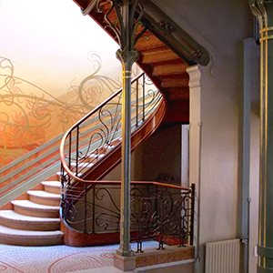
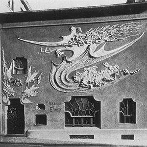
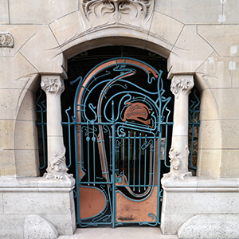
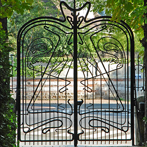
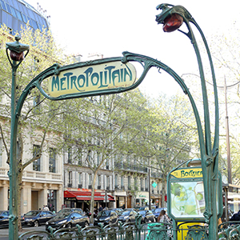
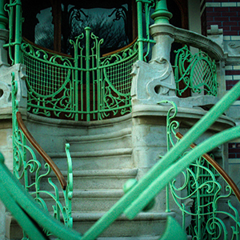
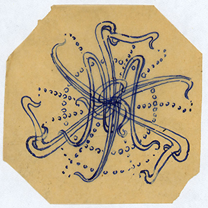
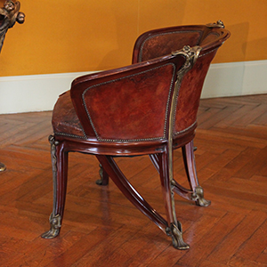
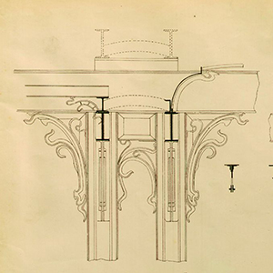

Whiplash designs in the interior of the Hôtel Tassel by Victor Horta (1895)

Atelier Elivira facade by in Jugendstil by August Endell. Munich (1896–97)

Entrance of Castel Béranger by Hector Guimard (1894–98)
Wrought Iron & Cast Iron

Gate of La Hublotière, country house of Hector Guimard (1896)

Paris Métro Station entrance at Station Boissière by Hector Guimard (1900)

Maison Saint-Cyr in Brussels by Gustave Strauven (1901–1903)
Furniture & Ornament

Sketch of an ornament by Victor Horta

Water Lily chair by Louis Majorelle (1900)

Interior design for Hôtel Solvay by Victor Horta (1898-1900)